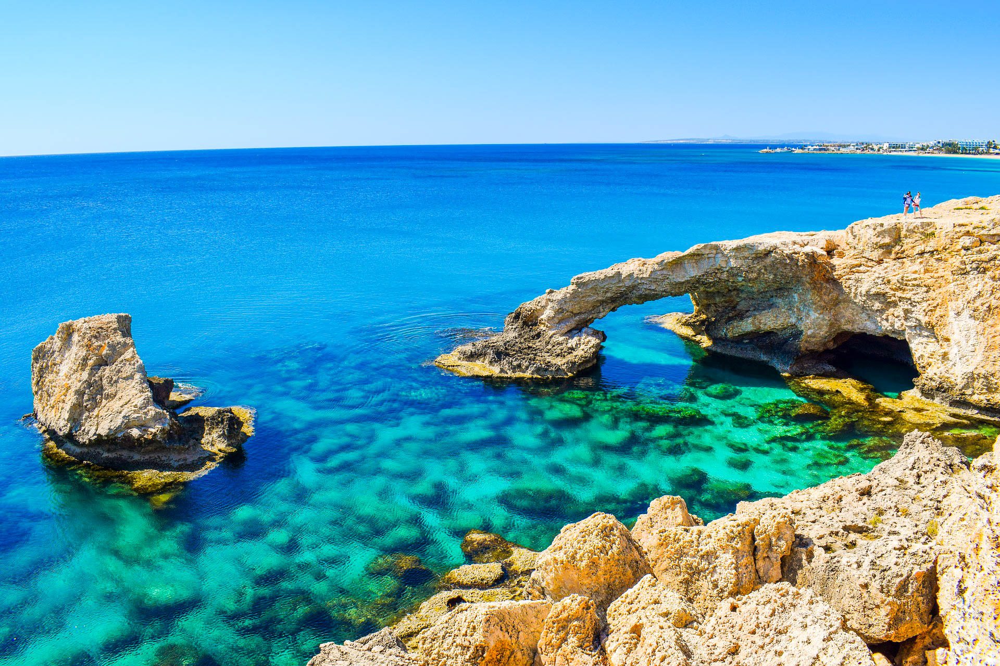

<!DOCTYPE html>
<html lang="en">
</html>
<head>
	<meta charset="UTF-8">
	<meta name="viewport" content="width=device-width, initial-scale=1">
	<link href="https://fonts.googleapis.com/css2?family=Open+Sans&display=swap" rel="stylesheet">
	<title>Page</title>
	<style>

		*{
			margin: 0;
			padding: 0;

		}
		body {
			font-family: 'Open Sans', sans-serif}
		nav{
			background-image: url('img/1.jpg');
			height: 720px;
			background-attachment: fixed;
			background-repeat: no-repeat;
			background-size: cover;
		}

		.name {
			display: flex;
			justify-content: space-between;
		}

		.name-text {
			text-transform: uppercase;
			font-size: 30px;
			margin: 0;
			position: relative;
			top: 25px;
			left: 25px;
			color: white;
		}
		a {
			text-decoration: none;
			color: white;
		}

		nav ul a {
			transition: 100ms ease-in-out;
		}

		nav ul a:hover {
			transition: 100ms ease-in-out;
			border: solid;
			border-right: 3px white;
			border-left: 3px white;
		}
		.top-of-btt-text-cont {
			padding: 0;
			text-transform: uppercase;
			font-size: calc(1em + 3vw);
			color: #FFF5EE;
			border: 2px solid ;
		}
		.watch-now-butt {
			margin-top: 10%;
			padding: 10px;
			border: solid 1px white ;
			border-radius: 50px;
			background-color: transparent;
			font-size: 20px;
			transition: 0.5s ease-in-out;
		}

		.watch-now-butt:hover {

			transition: 0.5s ease-in-out;
			background-color: white;
			color: black;

		}
		.first-text-title {
			font-size: calc(1em + 0.5vw);
			margin-top: 30px;
			color: #6495ED;
		}
		.first-text-main {
			font-size: calc(1em + 0.2vw);
			margin-right: 300px;
			margin-left: 300px;
		}
		.block-png2 {
			height: 60%;
			width: 70%;
		}
		.block-png1{
			height: 60%;
			width: 70%;
		}
		.block-container2 {
			text-align: center;
			width: 50%;
		}
		.block-container1 {
			text-align: center;
			width: 50%;
			margin-top: 0;
		}
		.block-title1 {
			font-size: 25px;
			color: #6495ED;
			letter-spacing: 2px;
		}
		.block-title2 {
			font-size: 25px;
			color: #6495ED;
			letter-spacing: 2px;
		}
		.grey-line {
			height: 50px;
			background-color: grey;
			margin-top: 100px;
			margin-bottom: 0;
			display: flex;
			justify-content: space-around;
			align-items: center;
			color: white;
			font-size: 20px;
		}
		.black-line {
			height: 300px;
			background-color: black;
			display: flex;
			justify-content: space-around;
			align-items: center;
			color: white;
			font-size: 20px;
		}
		.black-line-text {
			margin-top: 100px;
		}
		nav div {
			display: flex;
			justify-content: center;
		}
		section {
			margin-top: 200px;
		}

		ul {
			display: inline-flex;
			justify-content: space-between;
			color: white;
			margin-top: 35px;
			margin-right: 20px;
			font-size: 20px;
			list-style-type: none;
			transition: 0.5s;
		}
		.main-content-container {
			display: flex;
			align-items: center;
			margin-top: 100px;
		}
		.block-text1 {
			margin: 0 100px 0;
		}
		.block-text2 {
			margin: 0 70px 0;
		}
		@media (max-width: 1000px){
			ul {
				display: none;
			}
			.main-content-container {
				display: block;
			}
			.block-text1 {
				margin: auto;
			}
			.block-text2 {
				margin: auto;
			}
			.first-text-main {
				margin: auto;
			}
			.block-container1 {
				width: auto;
			}
			.block-container2 {
				width: auto;
				margin-top: 20px;
			}
		}
		li {
			margin-left: 40px;
		}
		.first-text-cont {
			text-align: center;
		}
	</style>
</head>
<body>


<nav>
	<div class="name">
		<p class="name-text">Bohdan Proj.</p>
		<ul>
			<li><a href="#">Home</a></li>
			<li><a href="#">Title</a></li>
			<li><a href="#">Main</a></li>
			<li><a href="#">Rights</a></li>
		</ul>
	</div>
	<section>
		<div class="top-of-btt-text-cont">
			<p class="top-of-btt-text"><strong>Cyprus / Maldives</strong></p>
		</div>
		<div>
			<a href="#" class="watch-now-butt">Watch now</a>
		</div>
	</section>
</nav>


<header>
	<div class="first-text-cont">
		<p class="first-text-title"><strong>About Sea</strong></p>
		<p class="first-text-main">The sea, the world ocean, or simply the ocean is the connected body of salty water that covers about 71% of Earth's surface (361,132,000 square kilometres [139,434,000 sq mi]), with a total volume of roughly 1,332,000,000 cubic kilometres [320,000,000 cu mi]. It moderates Earth's climate and has important roles in the water cycle, carbon cycle, and nitrogen cycle. It has been travelled and explored since ancient times, while the scientific study of the sea—oceanography—dates broadly from the voyages of Captain James Cook to explore the Pacific Ocean between 1768 and 1779. The word sea is also used to denote smaller, partly landlocked sections of the ocean and certain large, entirely landlocked, saltwater lakes, such as the Caspian Sea and the Dead Sea.</p>
	</div>


	<div class="main-content-container">

		<div class="block-container1">
			
			<p class="block-title1"><strong>Maldives</strong></p>
			<p style="letter-spacing: 1px" class="block-text1">The Maldivian Archipelago is located on the Chagos-Laccadive Ridge, a vast submarine mountain range in the Indian Ocean; this also forms a terrestrial ecoregion, together with the Chagos Archipelago and Lakshadweep. With an average ground-level elevation of 1.5 metres (4 ft 11 in) above sea level, it is the world's lowest-lying country, with even its highest natural point being one of the lowest in the world, at 5.1 metres (17 ft).</p>
		</div>

		<div class="block-container2">
			
			<p class="block-title2"><strong>Cyprus</strong></p>
			<p style="letter-spacing: 1px" class="block-text2">The earliest known human activity on the island dates to around the 10th millennium BC. Archaeological remains from this period include the well-preserved Neolithic village of Khirokitia, and Cyprus is home to some of the oldest water wells in the world. Cyprus was settled by Mycenaean Greeks in two waves in the 2nd millennium BC. As a strategic location in the Eastern Mediterranean, it was subsequently occupied by several major powers, including the empires of the Assyrians, Egyptians and Persians, from whom the island was seized in 333 BC by Alexander the Great. Subsequent rule by Ptolemaic Egypt, the Classical and Eastern Roman Empire, Arab caliphates for a short period, the French Lusignan dynasty and the Venetians, was followed by over three centuries of Ottoman rule between 1571 and 1878 (de jure until 1914).</p>
		</div>

	</div>


</header>


<div class="grey-line">
	<p>Thanks!</p>
</div>
<div class="black-line">
	<p class="black-line-text">2020 All rights reserved. Bohdan Dubchak.</p>
</div>
</body>